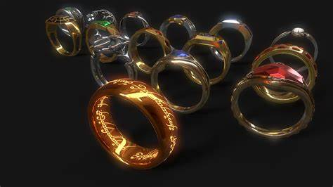

Establishment of Eregion and the forging of the Rings of Power The whereabouts of Celebrimbor during the early years of the Second Age are uncertain, but at some point, he became a great friend to Galadriel and Celeborn,[1] and in S.A. 750,[9] Celebrimbor with many others of the exiled Noldor followed them to establish the realm of Eregion near to Khazad-dûm, the mansions of the Longbeard Dwarves. This they did due to the discovery of mithril in the surrounding mountains.[10] Eventually, a great friendship arose between the Elves of Eregion and the Dwarves of Khazad-dûm, such that was never before seen, and Celebrimbor became the Lord of Eregion[10] and the greatest of the Gwaith-i-Mírdain, "People of the Jewel-smiths", who in their skill were second only to Fëanor, Celebrimbor's grandfather. There, Celebrimbor befriended Narvi the Dwarf,[11] who built the Doors of Durin, and Celebrimbor inscribed the words upon it.[12] However, in S.A. 1200, Sauron, under the fair guise of Annatar, came to Eriador posing as an emissary of the Valar. He was rejected by Gil-galad, the High King of the Noldor, in Lindon (where he was not even admitted to), but although Galadriel did not trust him and treated him with scorn, he was nonetheless accepted by the smiths of Eregion, for Celebrimbor desired in his heart to rival the skill and fame of Fëanor. Galadriel and Celeborn were eventually stripped of their authority in Eregion, and this was largely due to the machinations of Sauron. Galadriel, with her daughter Celebrían, departed for the Elvish realm of Lórien, while Celeborn, due to his dislike of all Dwarves and not wanting to cross through their mansions in Khazad-dûm, remained behind in Eregion, and he was largely ignored by Celebrimbor and Annatar thereafter.[11]  FUN FACT:) 20 rings of power were created.~three for the elves~seven for the dwarves~nine for the race of men~one for the Dark lord to "rule them all".